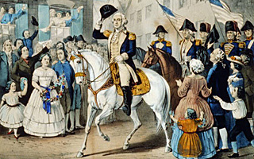

In 1698 Richard Coote (1636-1701), 1st Earl of Bellomont, briefly took power as the 12th governor of the Province of New York. Lord Bellomont put a stop to the practice of colonial governors selling or giving away any of the king's land in the New World. He specifically mentioned Governors Island in a decree, stating, "Being part of the Denizen of His Majestie's Fort at New York for the benefit and accommodation of His Majestie's Governors for the time being." This began the tradition of the island being used by the royal governors, and the name Nutten Island fell into disuse and Governors Island was adopted. Eventually, "The" was dropped and its apostrophe was rubbed out by the sands of time. However, no official royal decree ever officially re-named the island.
In June 1710 a flotilla of ships carrying several thousand immigrants, German Protestants who had fled to England, called the Palatines, journeyed across the Atlantic to New York. A royal order from Queen Anne decreed that the city board and feed the refugees. En route from England, a contagion swept through the ships, killing scores aboard. Fearing an outbreak in the colonies, the passengers were ordered into quarantine on Governors Island. About 250 died and were buried on the island. Many months later, the new immigrants were allowed to depart the island. They sailed up the Hudson River and settled in what are today Greene and Columbia counties. One of the Palatine immigrants was John Peter Zenger, a printer. He founded the New York Weekly Journal and became the first champion of freedom of the press in the colonies. This was one of the first times the island was used as a quarantine station, a role it would play many times over the succeeding generations.
It was not until 1755 that a military presence took hold on Governors Island. The first soldiers garrisoned on it were with the 51st Regiment of the British Colonial Militia. The island was easily overtaken in the spring of 1776 by rebel forces that clearly understood its strategic importance.
In April 1776, General Israel Putnam (1718-1790) came to Governors Island to command the famous Bunker Hill Regiment, a move indicative of the importance General George Washington gave to the post. With 1,000 troops, Putnam crossed the East River at nightfall and began immediately to erect fortifications on the island as defense against the British ships in the harbor. The Bunker Hill Regiment arrived on the island a few days later, and was then joined by the 4th Continental Infantry. In May, General Washington wrote to Lt. General Charles Lee: "In a fortnight more I think the City will be in a very respectable position of defense. Governor's Island has a large and strong work erected and a regiment encamped there."
By June 1776 the island's new batteries mounted four 32-pound and four 18-pound guns. These weapons fired on British ships attempting to move north of the city in July: the H.M.S. Phoenix, the H.M.S. Rose, the schooner Tryal and two tenders received 196 rounds of rebel fire. This cannon fire, and a bombardment by the British fleet from the harbor following General Washington's retreat at the end of August 1776, was the only warfare Governors Island has seen.
During the Battle of Long Island, Aug. 27, 1776, General Washington retreated by crossing the East River at night under the protection of the rebel cannons on Governors Island, while the garrison there remained for one full day more. On August 30, the island came under heavy fire from the British fleet. Cannon balls from this bombardment were still being found on the island in the early 20th Century. The English army took control of the island for the remainder of the war.

Gen. Washington's entry into New York, Nov. 25, 1783 (LOC)
After the British withdrew from New York in 1783, the king's troops left Governors Island. The formal British evacuation of New York occurred on Nov. 25, 1783, a date celebrated by generations in the city, but little remembered today. On December 3, New York Governor George Clinton received from Royal Navy Rear Admiral Robert Digby the official surrender of Governors Island.
All buildings and fortifications were left intact by the departing Englishmen, including a hospital, kitchen, cattle barn, barracks, and a summerhouse. None of these structures survive today.